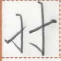
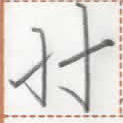

← Previous
Index
Next →
English: You guys are too young to work.
Chinese: 你们太年轻了，不能工作。
Chinese (pinyin): Nǐmen tài niánqīngle, bùnéng gōngzuò.
Pekzep (latin transcription): mua2 ge pet2 hue1 u1 giau hem mun1 py naip2.
Pekzep (hanzi transcription): 汝等星少訴門即無力労。
Pekzep (linzklā): 


 



Analysis:
| mua2 ge | 汝等 | | noun | | you guys, you all |
| pet2 hue1 | 星少 | | verb | | to be young |
| u1 giau | 訴門 | | postmodifier of degree | | too much |
| hem | 即 | | conjunction | | then, therefore |
| mun1 | 無 | | verb-modifier | negative marker | not |
| py | 力 | | verb-modifier | modality marker | can |
| naip2 | 労 | | verb | | to work |